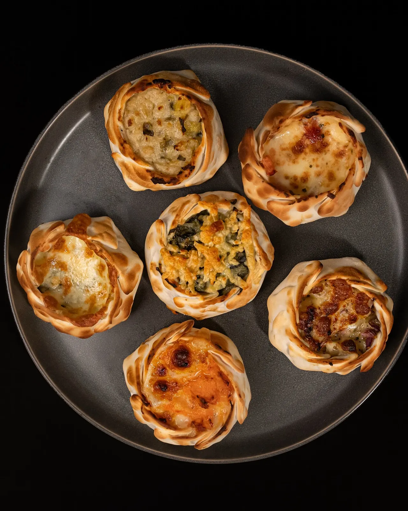
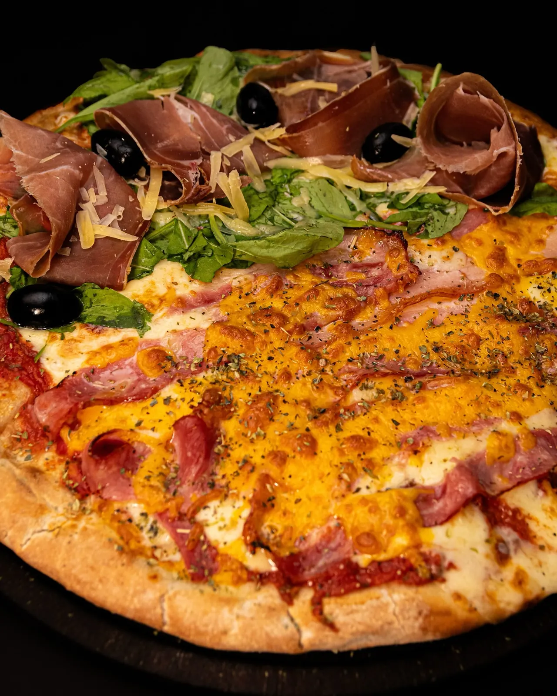

DESDE UNA ESQUINA DE TANDILFOTOS DE SU PROPIA COCINA / 2026
HASTAEL MOÑO.

01 — 03
CARTAPIZZAS.
EMPANADAS.
ASÍ DE SIMPLE.
DEMO↓
UN PROYECTO DE CARTA DIGITALEDICIÓN NO OFICIAL / 001
UNA MARCA QUE YA TIENE PERSONALIDADESTA ES SU COMIDA / SIN STOCK
 [ 01 ] / EL CORTE
[ 01 ] / EL CORTE
[ 02 ] / LA PIZZA03 / EL DETRÁSSANTAMARINA 54 · TANDIL
ANTES DEL
PRIMER
MORDISCO.
Horno, masa y manos trabajando. La cocina real del local es el corazón de esta identidad.
REGISTRO VISUAL PROPIO ↘

04 / SI PASÁS POR ACÁEL
ABRIR EN GOOGLE MAPS ↗Horarios a reconfirmar antes de la publicación.
EL
LOCAL
054.
ABRIR EN GOOGLE MAPS ↗Horarios a reconfirmar antes de la publicación.